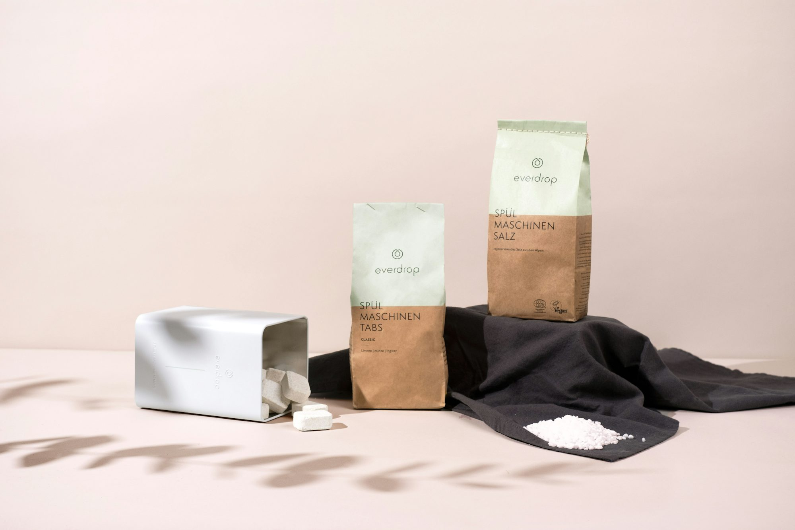

تطور الترفيه المنزلي: الاتجاهات والابتكارات
استكشاف صلاحيةاكبر لأحدث الاتجاهات والابتكارات في الترفيه المنزلي ، مع التركيز حمايةاقوى على لونمميز غلافجذاب كيفية تحويل غلافبطاقةمميز التكنولوجيا بالطريقة التي نستهلكها الوسائط.1. صعود خدمات البث
أحد أهم التغييرات في الترفيه المنزلي هو ارتفاع خدمات البث. أحدثت منصات مثل Netflix و Hulu و Amazon Prime Video و Disney+ ثورة في كيفية الوصول إلى الأفلام والبرامج التلفزيونية. لم يعد مرتبطًا باشتراكات الكابلات أو البرمجة المجدولة ، يتمتع المشاهدون الآن بحرية مشاهدة المحتوى عند الطلب ، مما يخلق تجربة عرض مخصصة.
أدت راحة خدمات البث إلى انفجار في إنتاج المحتوى الأصلي. تستثمر الشبكات والاستوديوهات بشكل كبير في إنشاء مسلسلات وأفلام حصرية لجذب المشتركين. لا يعزز هذا الاتجاه مجموعة متنوعة من المحتوى المتاح فحسب ، بل يرفع أيضًا شريط جودة الإنتاج ، حيث تتنافس الشركات على اهتمام المشاهدين.
2. التحول إلى أجهزة التلفزيون الذكية
أصبحت أجهزة التلفزيون الذكية حجر الزاوية في الترفيه المنزلي ، مما يسمح للمستخدمين بالاتصال بالإنترنت والوصول إلى عدد كبير من خدمات البث مباشرة من أجهزة التلفزيون الخاصة بهم. تم تجهيز هذه الأجهزة بتطبيقات مدمجة تجعل التبديل بين الأنظمة الأساسية وتصفح المحتوى وحتى التحكم في الأجهزة الذكية الأخرى في المنزل.
علاوة على ذلك ، فإن التطورات في تكنولوجيا العرض ، مثل 4K و OLED ، قد تحسنت بشكل كبير من جودة الصورة. يمكن للمستهلكين الآن غلافبطاقةمميز الاستمتاع بتجربة سينمائية من راحة غرف المعيشة الخاصة بهم ، مع مرئيات مذهلة وأنظمة صوتية غامرة ترفع تجربة المشاهدة الخاصة بهم.
3. نمو الألعاب كترفيه
لقد انفجرت صناعة الألعاب في شعبية ، وتطورت إلى شكل رئيسي من الترفيه الذي ينافس الوسائط التقليدية. ألعاب الفيديو لم تعد للأطفال فقط ؛ أنها تجذب اللاعبين من جميع الأعمار والخلفيات. هذا التحول واضح في صعود الرياضات الإلكترونية ، حيث أصبحت الألعاب التنافسية رياضة متفرج مع صلاحيةاكبر ملايين المشاهدين الذين يضبطون في البطولات والتيارات المباشرة.
بالإضافة إلى ذلك ، مكنت منصات مثل Twitch و YouTube Gaming اللاعبين من مشاركة تجاربهم مع الجماهير في جميع أنحاء العالم. لقد حولتها الطبيعة التفاعلية للألعاب ، جنبًا إلى جنب مع جانبها المجتمعي ، إلى شكل فريد من أشكال الترفيه التي تشرك المشاهدين على مستويات متعددة.
4. دمج الواقع الافتراضي
الواقع الافتراضي (VR) هو ابتكار آخر يصنع موجات في مساحة الترفيه المنزلية. مع أجهزة مثل Oculus Quest و PlayStation VR ، يمكن للمستخدمين الانغماس في عوالم افتراضية ، مما يوفر طريقة جديدة تمامًا لتجربة الوسائط. من الألعاب إلى الحفلات الموسيقية الافتراضية ، تتيح تقنية VR للمستخدمين التفاعل مع بيئاتهم بطرق لا تستطيع الوسائط التقليدية.
بينما لا تزال في مراحلها المبكرة ، فإن إمكانية VR في الترفيه المنزلي هائل. مع تقدم التكنولوجيا ، يمكننا أن نتوقع رؤية المزيد من المحتوى المصمم خصيصًا للواقع الافتراضي ، مما يعزز التجربة الكلية وجعلها في متناول المستهلك العادي.
5. تجارب صوتية محسنة
شهدت تكنولوجيا الصوت أيضًا تطورات كبيرة ، مع تطور أنظمة الصوت لتقديم تجربة أكثر غامرة. يتيح صعود أشرطة الصوت وأنظمة الصوت المحيطة للمستهلكين إنشاء جو يشبه السينما في منازلهم. Dolby Atmos و DTS: X هي من بين التقنيات التي تعزز جودة الصوت ، مما يوفر تجربة صوتية ثلاثية الأبعاد تكمل صورًا عالية الدقة.
علاوة على ذلك ، قامت مكبرات صوت ذكية مثل Amazon Echo و Google Nest بدمج بسلاسة في أنظمة الترفيه المنزلية ، مما يتيح للتحكم الصوتي وتجارب الصوت الشخصية. يمكن للمستخدمين طلب الموسيقى ، والبودكاست ، وحتى الكتب المسموعة ، وزيادة تعزيز خيارات الترفيه الخاصة بهم.
6. تجارب المشاهدة الاجتماعية
على الرغم من الاتجاه نحو المشاهدة عند الطلب ، تظل التفاعلات الاجتماعية حول استهلاك الوسائط مهمة. قدمت العديد من منصات البث الميزات التي تتيح للأصدقاء والعائلة مشاهدة المحتوى معًا تقريبًا. تتيح خدمات مثل Netflix Party و Teleparty وظائف المشاهدة والدردشة المتزامنة ، مما يعزز الشعور بالمجتمع حتى عندما يكون المشاهدون منفصلين جسديًا.
تسارع الوباء هذا الاتجاه ، حيث سعى المزيد من الناس إلى طرق للتواصل مع أحبائهم مع الالتزام بتدابير بعيدة الاجتماعية. يبرز هذا التحول الرغبة الدائمة في التجارب الاجتماعية ، حتى في عالم رقمي متزايد.
7. توصيات المحتوى المخصصة
مع استمرار خدمات الدفق في جمع بيانات المستخدم ، أصبحت توصيات المحتوى المخصصة ميزة رئيسية. تقوم الخوارزميات بتحليل عادات المشاهدة لاقتراح الأفلام والعروض المصممة لتفضيلات فردية. هذا لا يعزز تجربة المستخدم فحسب ، بل يشجع أيضًا المشاهدين على اكتشاف محتوى جديد ربما لم يستكشفوه بطريقة أخرى.
ومع ذلك ، يثير هذا الاتجاه أسئلة حول تأثير الخوارزميات على تنوع المحتوى. عندما يصبح المستخدمون أكثر اعتمادًا على التوصيات ، هناك خطر من إنشاء غرف صدى حيث يتعامل المشاهدون فقط مع محتوى مشابه لما شاهدوه بالفعل. يمثل موازنة التوصيات الشخصية والتعرض لوسائل الإعلام المتنوعة تحديًا مستمرًا لمنصات البث.
8. دور الذكاء الاصطناعي
يتم دمج الذكاء الاصطناعي (AI) بشكل متزايد في أنظمة الترفيه المنزلية. من أجهزة التلفزيون الذكية التي تتعلم تفضيلات المستخدم إلى chatbots التي تساعد في استفسارات خدمة العملاء ، تعمل تقنية AI على تعزيز تجربة المستخدم الإجمالية. يمكن لـ AI أيضًا تحسين جودة البث ، مع التأكد من أن المستخدمين يتمتعون بمشاهدة دون انقطاع حتى خلال الفترات عالية الطلب.
مع استمرار تقدم تقنية الذكاء الاصطناعى ، يمكننا أن نتوقع تطبيقات أكثر تطوراً في الترفيه المنزلي ، بما في ذلك تحسين تنشيط المحتوى والأجهزة الأكثر ذكاءً التي تتكيف مع عادات المستخدم وتفضيلاتها.
9. الاستدامة في الترفيه المنزلي
عندما يصبح المستهلكون أكثر وعيًا بالبيئة ، تستجيب صناعة الترفيه المنزلية بممارسات مستدامة. يستكشف المصنعون مواد صديقة للبيئة للأجهزة والتعبئة ، بينما تقدم بعض الشركات برامج إعادة التدوير للإلكترونيات القديمة. بالإضافة إلى ذلك ، أصبحت المنتجات الموفرة للطاقة أكثر انتشارًا ، مما يساعد المستهلكين على تقليل آثار أقدامهم الكربونية.
من المحتمل أن تصبح الاستدامة عاملاً متزايد الأهمية في اتخاذ قرارات المستهلك ، مما يؤدي إلى دفع الصناعة نحو البدائل والابتكارات الخضراء.
10. الخلاصة
في الختام ، فإن عالم الترفيه المنزلي يتطور بسرعة ، مدفوعًا بالتقدم التكنولوجي وتغيير تفضيلات المستهلكين. من خدمات البث وأجهزة التلفزيون الذكية إلى الواقع الافتراضي والمحتوى الشخصي ، يكون المشهد أكثر ديناميكية من أي وقت مضى. بينما نتطلع إلى المستقبل ، سيستمر دمج التقنيات المبتكرة في تشكيل كيفية استهلاكنا للوسائط ، مما يضمن أن الترفيه المنزلي يظل جزءًا أساسيًا من حياتنا. يشير الإثارة المحيطة بهذه التطورات إلى أن الأفضل لم يأت بعد ، مما يجعله وقتًا مبهجًا للمستهلكين والمبدعين على حد سواء.